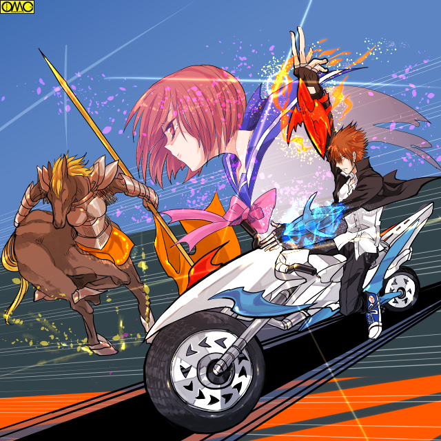

半人半馬…ホースアマッドネスと化した馬場はそのまま俊足を飛ばして逃げ出した。
「ま…待て！」
警官が威嚇射撃で地面を撃つが完全に無視。走り去る。
「こちら警ら。職務質問をした馬場と思われる男が…その…馬の化け物に」
無線で言っていて照れる言葉であるがそれどころではない。
「恐らくは頻発する性転換事件の重要参考人と思われます。応援願います」
いきなりな結びつけだが清良の通う高校以外にも、二つのエリアで男が女になるケースが続出していた。
そう。先に戦闘エリアとなったブレイザとジャンスの守るあたり。
段階を踏まえずほぼ一瞬で性転換である。超常現象と結びつけるのも無理はない。
さらには怪物に襲われて意識をとりもどしたら女になっていたという証言も多数。
そしてその「怪物」がいたのだ。しかも男だったはずの馬場が明らかな女に。
街は、そしてホースアマッドネスの行く道は大騒動になる。
「！」
清良はアマッドネス出現を感じ取った。それはキャロルも同様。
「セーラ様！ また現れたようです」
「うるせえ。もう変身なんざしねえって言ってるだろ」
長時間の変身で、意識まで女性化してしまったのを恥じている。変身を拒否していた。怖れてもいた。
「ああ。やっぱり……」
キャロルはため息をついた。
戦乙女セーラ
ＥＰＩＳＯＤＥ８「天馬」
どこにでもある住宅街。その中の庭付きの二階建て一軒家。
その二階には空き部屋と清良。理恵の部屋が。
清良は自分の部屋、さらには布団の中で引きこもっていた。
「セーラ様！ それでいいんですか？ あなたのお気持ちは一時的ですが、アマッドネスの犠牲者はこの先ずっと女性として死ぬまで過ごすんですよ。ヘタしたら命を落とす人もいるかもしれない」
「……」
天岩戸は開かない。
「セーラ様がちょっとだけガマンしてくだされば救われるんですよ」
「……ジャンスとかブレイザってのがいるんだろ。そいつらに頼めよ」
「いえ。恐らくお二方には出現がわかってない可能性があります」
「どういうことだよ？」
意外だったのか気をひいた。
「この感じ取る能力。当然ながら限界があります。現代の単位で言うなら半径三キロ程度」
「ああ」
それもそうだ。そうでないなら清良はブレイザやジャンスの戦いも感知しているはずなのだ。
つまり感知できないほどの距離となる。
「気がついたセーラ様が駆けつけるしかないんですよ。私も協力しますからお願いしますよ。セーラ様」
「…………チキショウ」
渋々ではあったがやっとでてきた。
「こうなったらアマッドネスの野郎をぶちのめして鬱憤晴らしだ」
変身ポーズを取ろうとする。
「待ってください。セーラ様」
今まで散々急かしていたキャロルが制止する。
「しかし急がないとまずいんだろうが。フェアリーで飛んでいくからよ」
「いえ。それではいささか目立ちすぎます」
前日のピラニアアマッドネスとの闘いを思い出す。川沿いに飛んでいるところを晒していた。
「あれはちと拙かったか……」
「それに協力もするといいましたよ。なるべく変身時間が少なくなるように、かつ目立つのを避けるため私がアマッドネスのところまで運びます」
「は！？」
どう重く見ても５キロもなさそうな猫がどうやって？
そう感じていると思われる表情を読み取った。にやりと笑う黒猫。
「セーラ様。戦乙女のお話はご存知ですか？」
厳密には当事者に聞いている。「覚えてますか」が正解だろう。
「いや。しらねぇ」
清良は素直に答える。
これはキャロルも予想していたらしく特に反応はなく、説明を始める。
「戦乙女は天馬…ペガサスにまたがって戦っていたのですよ。ペガサスたちは戦乙女の足となり、戦場を駆け抜けたのです」
「それがどう……まさか…俺が変身するように…お前もか？」
「正確には『戻る』と言いたいところですが」
ぴょんと跳ねると窓際に。そして庭に飛び降りた。
黒い輝きすら放つ毛並みが灰色を経て白に。
大きさも大型犬程度のサイズになってそして馬のそれに。
輝く白い背中から神話のように羽根が出現する。
清良は思わず階段を駆け下りていた。そして庭に。
「キャロル…これがお前の…」
「本来の姿なのですよ。セーラ様」
声は変わらない女の声のまま。
しかしその姿は神話の世界に生きているはずの天馬。天かけるペガサスだった。
「さぁ。私の背にお乗りください」
「い…いや…これはもっと目立つんじゃねぇか？」
さすがに躊躇する清良。
「なぜです。ただの馬ですよ。女の子が空を飛ぶより目立たないでしょう」
神話の世界に生きてきたキャロルとしてはもっともな主張。
「ダーッッッ！ 空飛ぶ馬も目立つに決まってんだろうが。それに馬で行き来する奴なんざこの東京にゃいないぜ」
「それもそうですね。では…」
姿が再び変わる。
天馬の顔がカウルのように。四肢は前輪と後輪に。巨大な胴は細くなって楽にまたがれるように。
鋭角な白いカウルの右に紅く、左に蒼いウイングが。
「鉄の馬ならいかがです？」
キャロルは一台のオートバイへと姿を変えていた。
「お前って…いったい…」
「私はいわば人造生命体なのですよ。だから悠久のときも超えることが出来たのです。このくらいの変化はわけがありません。いかがです。このオートバイなら」
「ああ。これならいい。ＸＲ２５０か。何とか操れるだろう」
「前にセーラ様が雑誌でこの鉄の馬を見ていたのでモデルにしてみました」
「それでか」
清良はキャロル・バイクモードにまたがる。
実際は必要がないのだが右ハンドルのアクセルを回す。
段々と気持ちが乗ってくる。
「よーし。突っ走るぜ。キャロル」
「はい。しっかりつかまっていてくださいよ」
中型と思っていた清良は面食らった。もっと大きなバイクの加速だったのだ。
ホースアマッドネスはひた走る。
ベースとなった馬場の「逃げる」と言う意識か？
それとも何かの作戦か。
追跡するパトカーは振り切られてきた。白バイ隊員だけが追跡を続行している。
こちらも警察とチェイスしている清良。
そりゃあそうだ。ノーヘルで乗り回しているのだ。しかも明らかなスピード違反。ついでにナンバープレートがない。
ホースアマッドネスをおっているのか、警察から逃げているのかわけがわからなくなっていた。
走り続けたホースアマッドネスは停車中の暴走族の一団を見つける。
「なんだ？」
怪訝な表情をする面々の中に突っ込む。そして二本足の姿に。
「てめえ。なんのマネだ？」
それに対してホースアマッドネスは大型の剣を胸に突き刺すことで返答とした。
ことここに至ってそれが特撮の撮影でもなければコスプレでもないと悟る。
「人殺し」から逃げようとするが次々と刃を突きたてていく。
そうやって立ち止まっていたために清良は追いついた。いや。待ち伏せをされていた。
「野郎……」
瞬間的に血が沸騰するのがわかる。
自分をおびき寄せ、数で叩くという作戦。
そのためだけに無関係のものたちを毒牙に…
「確かに…恥ずかしがっていられねぇな」
清良は心の女性化を恐れるのをやめた。
「キャロル。命預けるぜ」
彼は走るバイクでそのまま立つ。その両腕のリストバンドが戦闘意欲に応じてガントレットに。
「セ…セーラ様？ なにを」
キャロルは慌ててバランスを保つ。
「こっからはさすがに変身しないときつそうだからよ」
そして右手を天に。左手を地にかざす。水平に運び、腋にひきつけ前方に繰り出す。
「変身」

このイラストはＯＭＣによって作成されました。
クリエイターのハセフーコさんに感謝！
スパークする赤と青のガントレット。清良はセーラー服姿の少女へと変身した。
「よし。このまま奴等を突っ切るぞ」
「あの…それは良いのですがセーラ様？ 下着が見えてますが」
「えっ？」
立った状態で変身した。いつもなら静止しているからスカートも下に向かっているが今回は走るバイクの上。
前はともかく後ろの方が盛大にまくれ上がっていた。
セーラは思わず両手でスカートを押さえて、シートに座る。そして追跡していた白バイ隊員たちをにらむ。
白バイ隊員たちも目の前で少年が少女へ変わり、さらに盛大な「サービス」をしたので戸惑っている。
「うーっっっ」
涙目になっている。白バイ隊員たちも罪悪感が。追い討ちをかけるように
「見たなぁ。スケベ」
頬を染めて甲高い声で叫ぶセーラ。
（セーラ様…それはまるっきり女の子ですよ）
さすがにそれは言わないキャロル。代りにアドバイスを。
「ポーズはあくまで儀式です。意識さえ向かえばハンドルを握っていても変身できますよ」
「くそっ。そうだったな。チキショウ。知らなかったから思いっきりサービスしちまったぜ。嫁にいけない……」
「いくんですか？」
これには戦闘中ということを忘れるほど面食らった。
「ただのジョークだ。それよりキャロル。飛べるか？」
戦闘に気持ちを切り替えたセーラが尋ねてくる。
「お任せを」
迫り来る元暴走族の女たち。その直前でバイクが跳ねる。
まるでモトクロスのようにジャンプしてその一団をかわす。
ところが後続の面々はあらかじめ方向転換に入っていた。
セーラが突っ切るか飛び越すのを見越して追撃を用意していた。
さらには第二波がきた。挟み撃ちだ。
「キャロル！ 合図したらいいな」
「了解です」
ホースアマッドネスの目的は初めからセーラ抹殺。
覚醒の不完全なうちに叩くつもりだった。
そのためおびき出してセーラが手の出せない人間を差し向けた。
少なくとも囲い込むことは出来ると。
ところがセーラは右のガントレットを叩くと、まず体操着姿のヴァルキリアフォームに。それは途中経過。一気に超変身をしていてフェアリーフォームに。
キャロルのほうも瞬間的に黒猫に戻る。
それを抱えて飛んで逃げた。
なまじ間を離していたのがホースアマッドネスにとって裏目に出た。
充分な距離を置いた状態でキャロルがバイクモードに。そしてセーラも非力なフェアリーからヴァルキリアに。
「充分接近したらクロスファイヤを叩き込む」
もちろんそれが通るとは思ってない。
案の定ホースアマッドネスは疾走体になる。
（逃げる？ それとも）
もし逃げたらその背中に飛び乗って決めるつもりだった。
暗殺が目的だ。向かってきた。
「おもしれぇ。変則のチキンレースだぜ」
ぐんぐんと接近していく両者。
ホースアマッドネスの右手に剣が。左手には盾。
セーラは左手のガントレットを叩く。相対距離が十メートルでマーメイドフォームに。
（馬鹿め。腕力があってもノロマの人魚では）
馬鹿にしたのが油断に繋がった。人魚姫の手に伸縮警棒が。
（しまった！ 鈍重さはバイクがカバーしている）
慌てて方向を変えようとするがスピードが乗っていたため止まりきれない。
逆に速度を落とすことなくマーメイドランスを抱えたセーラが駆け抜ける。
ホースアマッドネスは左手の盾でガードしようとしたが、マーメイドの腕力と、バイクのスピードで弾かれそのまま胴をなぎ払われた。
「ぐおおおっ」
叫びを聞くまでもない。手ごたえが物語っていた。セーラはバイクを止める。
そして芝居がかって口上を。
「戦乙女。聖なる武具。天馬。三位一体。名づけてスプラッシュブルー」
ホースの断末魔が響き渡る。
「悪よ。泡のように消え去れ」
決め台詞にあわしたかのように爆発した。
司令塔がなくなり支配されていた暴走族たちも意識を失う。
白バイ隊員が救急車を手配して「馬の化け物」を追ってみれば、そこには異様な光景が。
「あっ。おまわりさん。もう終わりましたよ」
白バイ隊員たちは目が釘付け。
「？」
怪訝に思ったセーラが改めて自分の姿を見る。
そりゃあバイクにまたがるスクール水着の女の子なんて、奇異の目で見られて当然であろう。
「いやぁーん」
セーラは慌てて体を隠す。
（あ…もう女の子モード入っちゃったみたい）
警官の前なので無言だったキャロルはバイクの姿のまま苦笑した。